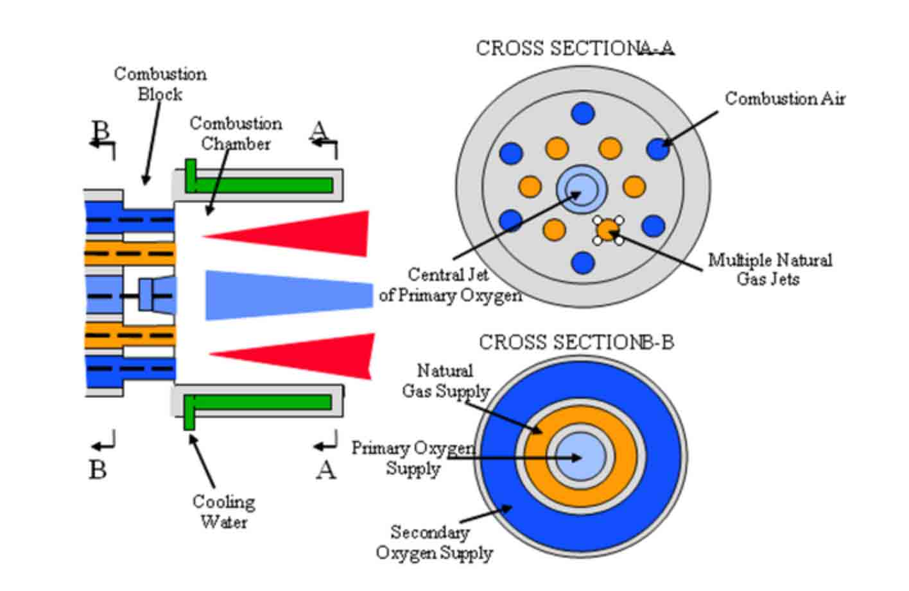
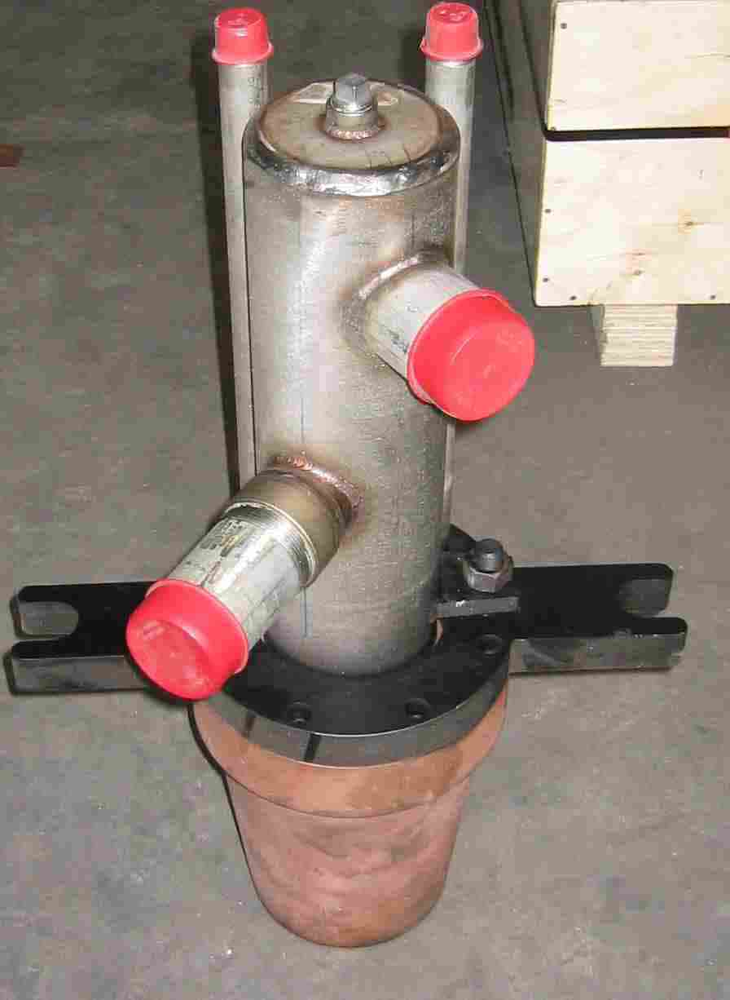
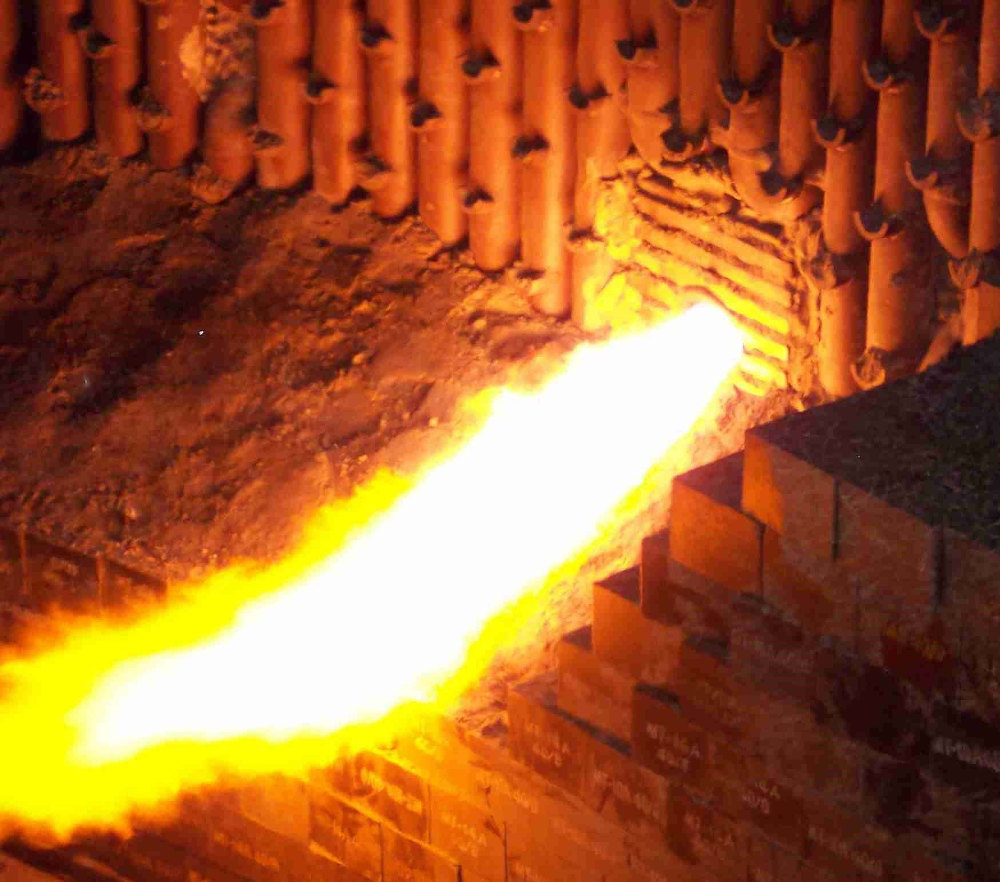

PyrOx™ Burner
ACI's PyrOx™ burner system utilizes pyrolysis based two stage combustion technique that assures superior radiative and convective heat transfer to the load. The fuel and oxidizer are pre-mixed in the combustion chamber to guarantee highest fuel utilization.
- Highly efficient 1 to 4.5 MW oxy-fuel burner, used in EAFs
- High velocity, high pressure flame impinging on the steel scrap pile
- Water-cooled combustion allows active mixing of natural gas and oxygen protects the nozzle from plugging with splashing slag and steel



PyrOx™ Burner Benefits
- Increase Furnace Production
- Increase melting rate up to 50%
- Decrease total energy cost
- Improve Metallic yield
- Extend Refractory life
- Optimize oxygen usage
Characteristics of PyrOx™ technology
Efficiency: Highly luminous flame dramatically increases heat transfer efficiency to the load
Robust Concept: PyrOx™ is an industry-proven design, showing extended longevity together with low maintenance requirements
Power Range: from 1.5 MW up to 4.5 MW
- Staged combustion
- Multiple, high velocity jets (perfect mixing and reduced residence time
- Independently control of the oxygen / air ratio